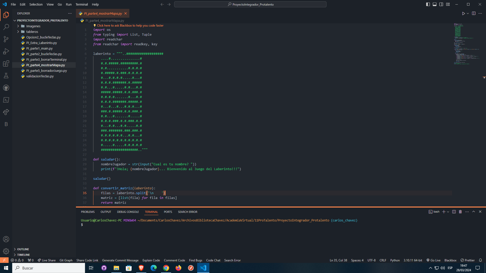
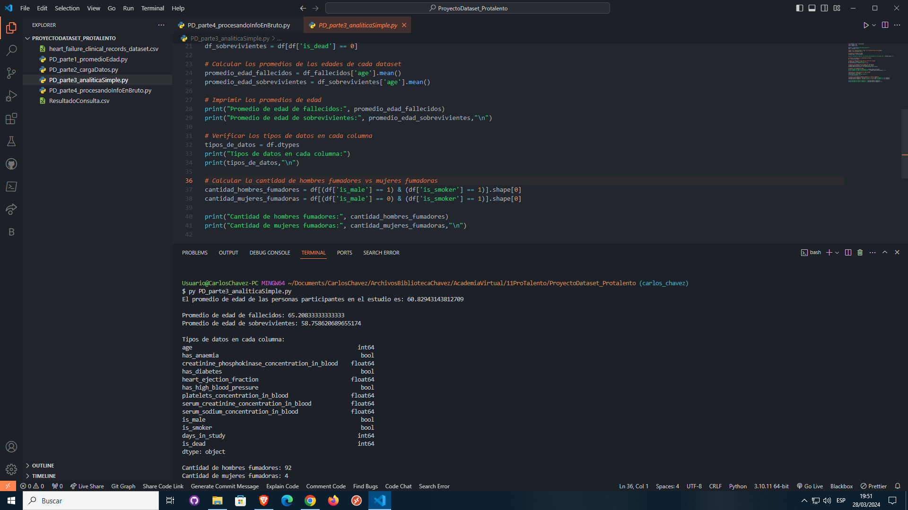

Proyecto Integrador Laberinto - PROTALENTO
Este consistirá en laberintos representados por caracteres ASCII dónde el símbolo "#" representará una pared, el símbolo "."
un pasillo y la letra "P" el personaje que deberá completar todo el recorrido del laberinto hasta el final.
El código del programa deberá estructucturarse para que el jugador se pueda mover por el mapa usando las teclas ↑ ↓ ← → de tu teclado.
Fases de las entregas del proyecto.
El desarrollo de este proyecto está planeado en 5 fases de entrega, teniendo en cuenta las indicaciones del mentor de Protalento. 
Proyecto Integrador DataSet - PROTALENTO
procesarlo, limpiarlo y finalmente ajustar modelos de machine learning para realizar predicciones sobre estos datos.
Fases de las entregas del proyecto.
El desarrollo de este proyecto está planeado en 5 fases de entrega, teniendo en cuenta las indicaciones del mentor de Protalento. 